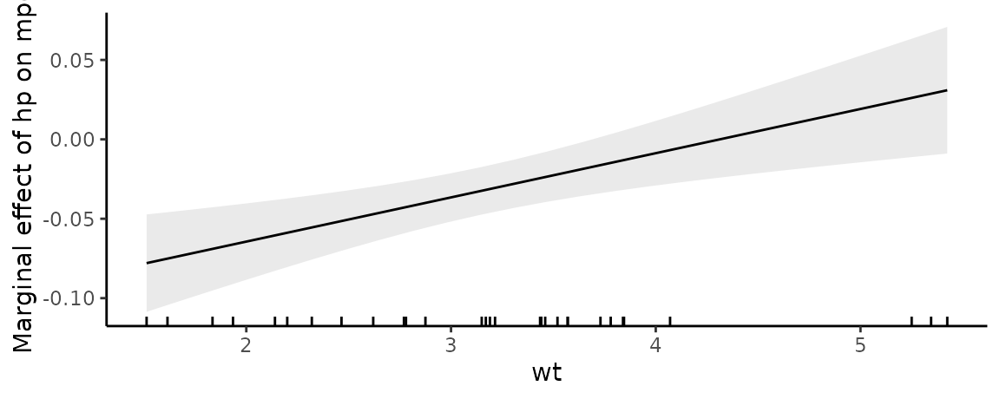

Definition
A “marginal effect” (MFX) is a measure of the association between a change in a regressor, and a change in the response variable. More formally, the excellent margins vignette defines the concept as follows:
Marginal effects are partial derivatives of the regression equation with respect to each variable in the model for each unit in the data.
Put differently, the marginal effect measures the association between a change in a regressor \(x\), and a change in the response \(y\). Put differently, differently, the marginal effect is the slope of the prediction function, measured at a specific value of the regressor \(x\).
Marginal effects are extremely useful, because they are intuitive and easy to interpret. They are often the main quantity of interest in an empirical analysis.
In scientific practice, the “Marginal Effect” falls in the same toolbox as the “Contrast.” Both try to answer a counterfactual question: What would happen to \(y\) if \(x\) were different? They allow us to model the “effect” of a change/difference in the regressor \(x\) on the response \(y\).1
To illustrate the concept, consider this quadratic function:
\[y = -x^2\]
From the definition above, we know that the marginal effect is the partial derivative of \(y\) with respect to \(x\):
\[\frac{\partial y}{\partial x} = -2x\]
To get intuition about how to interpret this quantity, consider the response of \(y\) to \(x\). It looks like this:

When \(x\) increases, \(y\) starts to increase. But then, as \(x\) increases further, \(y\) creeps back down in negative territory.
A marginal effect is the slope of this response function at a certain value of \(x\). The next plot adds three tangent lines, highlighting the slopes of the response function for three values of \(x\). The slopes of these tangents tell us three things:
- When \(x<0\), the slope is positive: an increase in \(x\) is associated with an increase in \(y\): The marginal effect is positive.
- When \(x=0\), the slope is null: a (small) change in \(x\) is associated with no change in \(y\). The marginal effect is null.
- When \(x>0\), the slope is negative: an increase in \(x\) is associated with a decrease in \(y\). The marginal effect is negative.

Below, we show how to reach the same conclusions in an estimation context, with simulated data and the marginaleffects function.
marginaleffects function
The marginal effect is a unit-level measure of association between changes in a regressor and changes in the response. Except in the simplest linear models, the value of the marginal effect will be different from individual to individual, because it will depend on the values of the other covariates for each individual.
The marginaleffects function thus produces distinct estimates of the marginal effect for each row of the data used to fit the model. The output of marginaleffects is a simple data.frame, which can be inspected with all the usual R commands.
To show this, we load the library, download the Palmer Penguins data from the Rdatasets archive, and estimate a GLM model:
library(marginaleffects)
dat <- read.csv("https://vincentarelbundock.github.io/Rdatasets/csv/palmerpenguins/penguins.csv")
dat$large_penguin <- ifelse(dat$body_mass_g > median(dat$body_mass_g, na.rm = TRUE), 1, 0)
mod <- glm(large_penguin ~ bill_length_mm + flipper_length_mm + species,
data = dat, family = binomial)
mfx <- marginaleffects(mod)
head(mfx)
#> rowid type term contrast dydx std.error statistic
#> 1 1 response bill_length_mm dY/dX 0.01763035 0.007841310 2.248393
#> 2 2 response bill_length_mm dY/dX 0.03586004 0.011923232 3.007577
#> 3 3 response bill_length_mm dY/dX 0.08444404 0.021123004 3.997729
#> 4 4 response bill_length_mm dY/dX 0.03472711 0.006508685 5.335504
#> 5 5 response bill_length_mm dY/dX 0.05089119 0.013414434 3.793763
#> 6 6 response bill_length_mm dY/dX 0.01651544 0.007256548 2.275937
#> p.value conf.low conf.high predicted predicted_hi predicted_lo
#> 1 2.455116e-02 0.00226166 0.03299903 0.05123266 0.05128115 0.05123266
#> 2 2.633393e-03 0.01249093 0.05922914 0.11125087 0.11134949 0.11125087
#> 3 6.395319e-05 0.04304371 0.12584437 0.36919834 0.36943056 0.36919834
#> 4 9.527951e-08 0.02197033 0.04748390 0.10725326 0.10734876 0.10725326
#> 5 1.483813e-04 0.02459938 0.07718299 0.16882994 0.16896989 0.16882994
#> 6 2.284981e-02 0.00229287 0.03073802 0.04782069 0.04786611 0.04782069
#> large_penguin bill_length_mm flipper_length_mm species eps
#> 1 0 39.1 181 Adelie 0.00275
#> 2 0 39.5 186 Adelie 0.00275
#> 3 0 40.3 195 Adelie 0.00275
#> 4 0 36.7 193 Adelie 0.00275
#> 5 0 39.3 190 Adelie 0.00275
#> 6 0 38.9 181 Adelie 0.00275The Marginal Effects Zoo
A dataset with one marginal effect estimate per unit of observation is a bit unwieldy and difficult to interpret. There are ways to make this information easier to digest, by computing various quantities of interest. In a characteristically excellent blog post, Professor Andrew Heiss introduces many such quantities:
- Average Marginal Effects
- Group-Average Marginal Effects
- Marginal Effects at User-Specified Values (or Representative Values)
- Marginal Effects at the Mean
- Counterfactual Marginal Effects
- Conditional Marginal Effects
The rest of this vignette defines each of those quantities and explains how to use the marginaleffects() and plot_cme() functions to compute them. The main differences between these quantities pertain to (a) the regressor values at which we estimate marginal effects, and (b) the way in which unit-level marginal effects are aggregated.
Heiss drew this exceedingly helpful graph which summarizes the information in the rest of this vignette:

Average Marginal Effect (AME)
A dataset with one marginal effect estimate per unit of observation is a bit unwieldy and difficult to interpret. Many analysts like to report the “Average Marginal Effect”, that is, the average of all the observation-specific marginal effects. These are easy to compute based on the full data.frame shown above, but the summary function is convenient:
summary(mfx)
#> Term Contrast Effect Std. Error z value Pr(>|z|)
#> 1 bill_length_mm dY/dX 0.02757 0.005784 4.7675 1.8653e-06
#> 2 flipper_length_mm dY/dX 0.01058 0.002357 4.4895 7.1390e-06
#> 3 species Chinstrap - Adelie -0.41479 0.056900 -7.2898 3.1032e-13
#> 4 species Gentoo - Adelie 0.06170 0.106856 0.5774 0.56367
#> 2.5 % 97.5 %
#> 1 0.016238 0.03891
#> 2 0.005963 0.01520
#> 3 -0.526312 -0.30327
#> 4 -0.147735 0.27113
#>
#> Model type: glm
#> Prediction type: responseNote that since marginal effects are derivatives, they are only properly defined for continuous numeric variables. When the model also includes categorical regressors, the summary function will try to display relevant (regression-adjusted) contrasts between different categories, as shown above.
You can also extract average marginal effects using tidy and glance methods which conform to the broom package specification:
tidy(mfx)
#> type term contrast estimate std.error
#> 1 response bill_length_mm dY/dX 0.02757371 0.005783687
#> 2 response flipper_length_mm dY/dX 0.01058283 0.002357239
#> 3 response species Chinstrap - Adelie -0.41479008 0.056899735
#> 4 response species Gentoo - Adelie 0.06169819 0.106855875
#> statistic p.value conf.low conf.high
#> 1 4.7674971 1.865287e-06 0.016237894 0.03890953
#> 2 4.4895005 7.139036e-06 0.005962722 0.01520293
#> 3 -7.2898420 3.103188e-13 -0.526311511 -0.30326865
#> 4 0.5773963 5.636718e-01 -0.147735476 0.27113186
glance(mfx)
#> aic bic r2.tjur rmse nobs F logLik
#> 1 179.8451 199.0192 0.6949385 0.2763254 342 15.66122 -84.92257Group-Average Marginal Effect (G-AME)
We can also use the by argument the average marginal effects within different subgroups of the observed data, based on values of the regressors. For example, to compute the average marginal effects of Bill Length for each Species, we do:
mfx2 <- marginaleffects(mod, by = "species", variables = "bill_length_mm")
summary(mfx2)
#> Term Contrast species Effect Std. Error z value Pr(>|z|)
#> 1 bill_length_mm mean(dY/dX) Adelie 0.043540 0.008828 4.932 8.1365e-07
#> 2 bill_length_mm mean(dY/dX) Gentoo 0.002872 0.002846 1.009 0.31299360
#> 3 bill_length_mm mean(dY/dX) Chinstrap 0.036801 0.009801 3.755 0.00017337
#> 2.5 % 97.5 %
#> 1 0.026237 0.06084
#> 2 -0.002707 0.00845
#> 3 0.017592 0.05601
#>
#> Model type: glm
#> Prediction type: responseThis is equivalent to manually taking the mean of the observation-level marginal effect for each species sub-group:
aggregate(dydx ~ species, data = mfx2, FUN = mean)
#> species dydx
#> 1 Adelie 0.043539914
#> 2 Chinstrap 0.036801185
#> 3 Gentoo 0.002871562Note that marginaleffects follows Stata and the margins package in computing standard errors using the group-wise averaged Jacobian.
Marginal Effect at User-Specified Values
Sometimes, we are not interested in all the unit-specific marginal effects, but would rather look at the estimated marginal effects for certain “typical” individuals, or for user-specified values of the regressors. The datagrid function helps us build a data grid full of “typical” rows. For example, to generate artificial Adelies and Gentoos with 180mm flippers:
datagrid(flipper_length_mm = 180,
species = c("Adelie", "Gentoo"),
model = mod)
#> bill_length_mm flipper_length_mm species
#> 1 43.92193 180 Adelie
#> 2 43.92193 180 GentooThe same command can be used (omitting the model argument) to marginaleffects’s newdata argument to compute marginal effects for those (fictional) individuals:
marginaleffects(mod,
newdata = datagrid(flipper_length_mm = 180,
species = c("Adelie", "Gentoo")))
#> rowid type term contrast dydx std.error
#> 1 1 response bill_length_mm dY/dX 0.06069179 0.033264242
#> 2 2 response bill_length_mm dY/dX 0.08467378 0.040399763
#> 3 1 response flipper_length_mm dY/dX 0.02329304 0.005497946
#> 4 2 response flipper_length_mm dY/dX 0.03249805 0.008609938
#> 5 1 response species Chinstrap - Adelie -0.21105002 0.103178237
#> 6 2 response species Chinstrap - Adelie -0.21105002 0.103178237
#> 7 1 response species Gentoo - Adelie 0.15912111 0.303473386
#> 8 2 response species Gentoo - Adelie 0.15912111 0.303473386
#> statistic p.value conf.low conf.high predicted predicted_hi
#> 1 1.824536 6.807114e-02 -0.004504923 0.12588851 0.2125242 0.21269115
#> 2 2.095898 3.609126e-02 0.005491694 0.16385586 0.3716454 0.37187821
#> 3 4.236681 2.268483e-05 0.012517266 0.03406882 0.2125242 0.21266168
#> 4 3.774482 1.603406e-04 0.015622885 0.04937322 0.3716454 0.37183710
#> 5 -2.045490 4.080661e-02 -0.413275648 -0.00882439 0.2125242 0.00147423
#> 6 -2.045490 4.080661e-02 -0.413275648 -0.00882439 0.3716454 0.00147423
#> 7 0.524333 6.000470e-01 -0.435675798 0.75391802 0.2125242 0.37164536
#> 8 0.524333 6.000470e-01 -0.435675798 0.75391802 0.3716454 0.37164536
#> predicted_lo bill_length_mm flipper_length_mm species large_penguin eps
#> 1 0.2125242 43.92193 180 Adelie 0 0.00275
#> 2 0.3716454 43.92193 180 Gentoo 0 0.00275
#> 3 0.2125242 43.92193 180 Adelie 0 0.00590
#> 4 0.3716454 43.92193 180 Gentoo 0 0.00590
#> 5 0.2125242 43.92193 180 Adelie 0 NA
#> 6 0.2125242 43.92193 180 Gentoo 0 NA
#> 7 0.2125242 43.92193 180 Adelie 0 NA
#> 8 0.2125242 43.92193 180 Gentoo 0 NAWhen variables are omitted from the datagrid call, they will automatically be set at their median or mode (depending on variable type).
Marginal Effect at the Mean (MEM)
The “Marginal Effect at the Mean” is a marginal effect calculated for a hypothetical observation where each regressor is set at its mean or mode. By default, the datagrid function that we used in the previous section sets all regressors to their means or modes. To calculate the MEM, we can set the newdata argument, which determines the values of predictors at which we want to compute marginal effects:
marginaleffects(mod, newdata = "mean")
#> rowid type term contrast dydx std.error
#> 1 1 response bill_length_mm dY/dX 0.05063549 0.011972651
#> 2 1 response flipper_length_mm dY/dX 0.01943563 0.005595992
#> 3 1 response species Chinstrap - Adelie -0.80569873 0.073539686
#> 4 1 response species Gentoo - Adelie 0.08359420 0.114498716
#> statistic p.value conf.low conf.high predicted predicted_hi
#> 1 4.2292632 2.344579e-05 0.027169528 0.07410146 0.8320938 0.83223305
#> 2 3.4731341 5.144183e-04 0.008467688 0.03040357 0.8320938 0.83220848
#> 3 -10.9559718 6.220703e-28 -0.949833864 -0.66156359 0.8320938 0.02639508
#> 4 0.7300885 4.653361e-01 -0.140819162 0.30800756 0.8320938 0.91568800
#> predicted_lo bill_length_mm flipper_length_mm species large_penguin eps
#> 1 0.8320938 43.92193 200.9152 Adelie 0 0.00275
#> 2 0.8320938 43.92193 200.9152 Adelie 0 0.00590
#> 3 0.8320938 43.92193 200.9152 Adelie 0 NA
#> 4 0.8320938 43.92193 200.9152 Adelie 0 NACounterfactual Marginal Effects
The datagrid function allowed us look at completely fictional individuals. Setting the grid_type argument of this function to "counterfactual" lets us compute the marginal effects for the actual observations in our dataset, but with a few manipulated values. For example, this code will create a data.frame twice as long as the original dat, where each observation is repeated with different values of the flipper_length_mm variable:
We see that the rows 1, 2, and 3 of the original dataset have been replicated twice, with different values of the flipper_length_mm variable:
nd[nd$rowid %in% 1:3,]
#> rowidcf large_penguin bill_length_mm species flipper_length_mm
#> 1 1 0 39.1 Adelie 160
#> 2 2 0 39.5 Adelie 160
#> 3 3 0 40.3 Adelie 160
#> 343 1 0 39.1 Adelie 180
#> 344 2 0 39.5 Adelie 180
#> 345 3 0 40.3 Adelie 180We can use the observation-level marginal effects to compute average (or median, or anything else) marginal effects over the counterfactual individuals:
Conditional Marginal Effects (Plot)
The plot_cme function can be used to draw “Conditional Marginal Effects.” This is useful when a model includes interaction terms and we want to plot how the marginal effect of a variable changes as the value of a “condition” (or “moderator”) variable changes:

The marginal effects in the plot above were computed with values of all regressors – except the effect and the condition – held at their means or modes, depending on variable type.
Since plot_cme() produces a ggplot2 object, it is easy to customize. For example:
plot_cme(mod, effect = "hp", condition = "wt") +
geom_rug(aes(x = wt), data = mtcars) +
theme_classic()
Example: Quadratic
In the “Definition” section of this vignette, we considered how marginal effects can be computed analytically in a simple quadratic equation context. We can now use the marginaleffects function to replicate our analysis of the quadratic function in a regression application.
Say you estimate a linear regression model with a quadratic term:
\[Y = \beta_0 + \beta_1 X^2 + \varepsilon\]
and obtain estimates of \(\beta_0=1\) and \(\beta_1=2\). Taking the partial derivative with respect to \(X\) and plugging in our estimates gives us the marginal effect of \(X\) on \(Y\):
\[\partial Y / \partial X = \beta_0 + 2 \cdot \beta_1 X\] \[\partial Y / \partial X = 1 + 4X\]
This result suggests that the effect of a change in \(X\) on \(Y\) depends on the level of \(X\). When \(X\) is large and positive, an increase in \(X\) is associated to a large increase in \(Y\). When \(X\) is small and positive, an increase in \(X\) is associated to a small increase in \(Y\). When \(X\) is a large negative value, an increase in \(X\) is associated with a decrease in \(Y\).
marginaleffects arrives at the same conclusion in simulated data:
library(tidyverse)
N <- 1e5
quad <- data.frame(x = rnorm(N))
quad$y <- 1 + 1 * quad$x + 2 * quad$x^2 + rnorm(N)
mod <- lm(y ~ x + I(x^2), quad)
marginaleffects(mod, newdata = datagrid(x = -2:2)) %>%
mutate(truth = 1 + 4 * x) %>%
select(dydx, truth)
#> dydx truth
#> 1 -7.0029951 -7
#> 2 -3.0028940 -3
#> 3 0.9972072 1
#> 4 4.9973083 5
#> 5 8.9974094 9We can plot conditional adjusted predictions with plot_cap function:
plot_cap(mod, condition = "x")
We can plot conditional marginal effects with the plot_cme function (see section below):
plot_cme(mod, effect = "x", condition = "x")
Again, the conclusion is the same. When \(x<0\), an increase in \(x\) is associated with an increase in \(y\). When \(x=0\), the marginal effect is equal to 0. When \(x>0\), an increase in \(x\) is associated with a decrease in \(y\).
Prediction types
The marginaleffect function takes the derivative of the fitted (or predicted) values of the model, as is typically generated by the predict(model) function. By default, predict produces predictions on the "response" scale, so the marginal effects should be interpreted on that scale. However, users can pass a string or a vector of strings to the type argument, and marginaleffects will consider different outcomes.
Typical values include "response" and "link", but users should refer to the documentation of the predict of the package they used to fit the model to know what values are allowable. documentation.
mod <- glm(am ~ mpg, family = binomial, data = mtcars)
mfx <- marginaleffects(mod, type = "response")
summary(mfx)
#> Term Effect Std. Error z value Pr(>|z|) 2.5 % 97.5 %
#> 1 mpg 0.04649 0.008857 5.249 1.5303e-07 0.02913 0.06385
#>
#> Model type: glm
#> Prediction type: response
mfx <- marginaleffects(mod, type = "link")
summary(mfx)
#> Term Effect Std. Error z value Pr(>|z|) 2.5 % 97.5 %
#> 1 mpg 0.307 0.1148 2.673 0.0075066 0.08194 0.5321
#>
#> Model type: glm
#> Prediction type: linkRegression tables and coefficient plots
Average marginal effects are easy to display in a regression table using packages like modelsummary. See the tables and plots vignette.
Supporting new models
In most cases, extending marginaleffects to support new models is easy. Imagine you want to add support for an object called model of class EXAMPLE with N observations.
Step 1: Check if marginaleffects default functions work:
# returns a named vector of coefficients
get_coef(model)
# returns a named vector of predictions
# returns a named matrix of size NxK for models with K levels (e.g., multinomial logit)
get_predict(model)
# returns a named square matrix of size equal to the number of coefficients
get_vcov(model)
# returns a new model object with different stored coefficients
# calling get_predict(model) and get_predict(model_new) should produce different results
model_new <- set_coef(model, rep(0, length(get_coef(model))))
predict(model) != predict(model_new)If all of these functions work out-of-the-box, there’s a good chance your model will be supported automatically. If they do not work, move to…
Step 2: Define the missing methods.
Find the class name of your model by calling:
class(model)Then, create functions (methods) called get_coef.EXAMPLE, get_predict.EXAMPLE, vcov.EXAMPLE, and set_coef.EXAMPLE, with the “EXAMPLE” replaced by the name your model class.